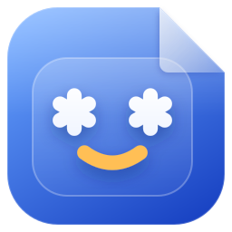

Hauptform, hell
bespex
Hauptform, dunkel
bespex
Einzeilig · Absender
be spex
Fußzeilen, About, Dokumente. Im Text: „be spex“, technisch „bespex“, nie „be-spex“.Plakette · nur Avatar GitHub-Organisation, Social. Nicht in Programmen.
GitHub-Organisation, Social. Nicht in Programmen.
Entwurf 2026-11-16 · Regeln in brand/README.md · baut auf Website, Icons und Logos auf, die es schon gibt

marqDokumentkopf: App links, Absender rechts, orange Linie als einziger Akzent. Fließtext Open Sans, Überschriften fett ohne Farbe.
| Hauptseite | bespex.run |
| App | bespex.run/maillet · /hatrack · /pockettray |
| Produkt | bespex.run/codedeck (codeck → hierher) |
| Qiew | bespex.run/qiew · bespex.run/jayq … |
| Umleitung | bespex.run/codeck → /codedeck |
| App-ID | net.spex.<app> bleibt |
| Repos | github.com/bespex/<Name> |